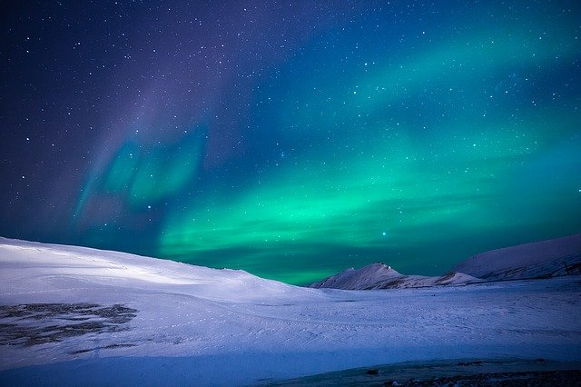
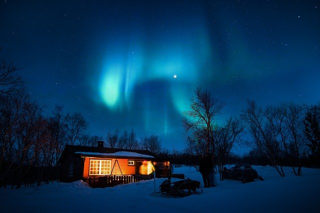
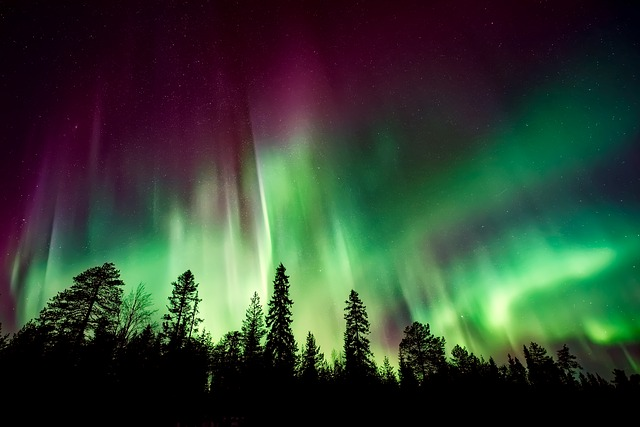
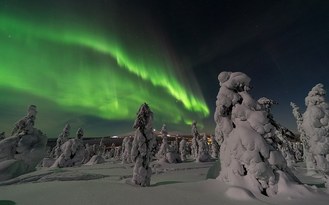
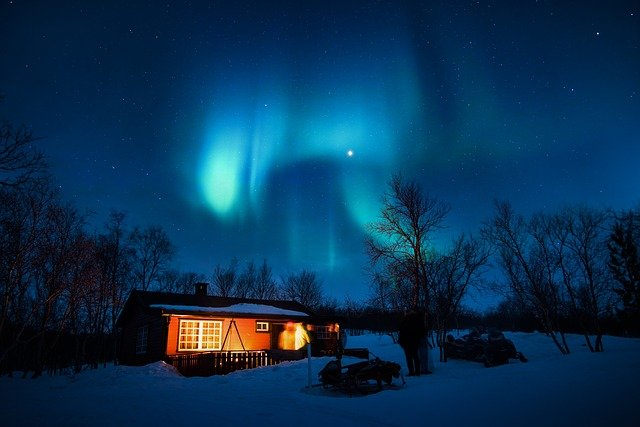
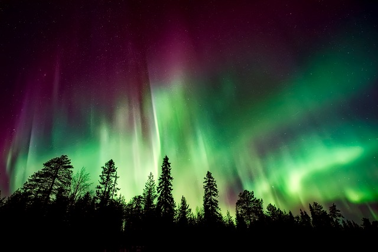
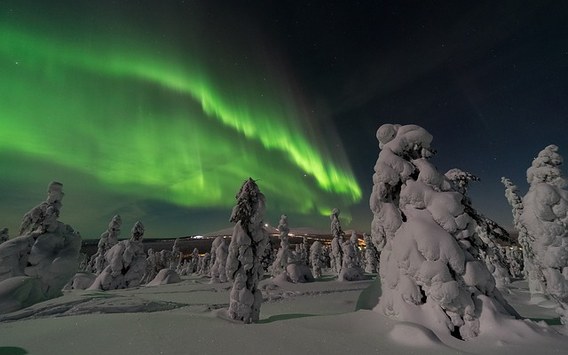
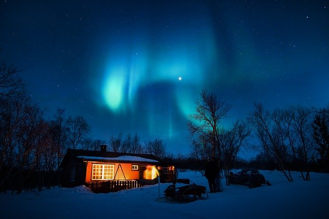
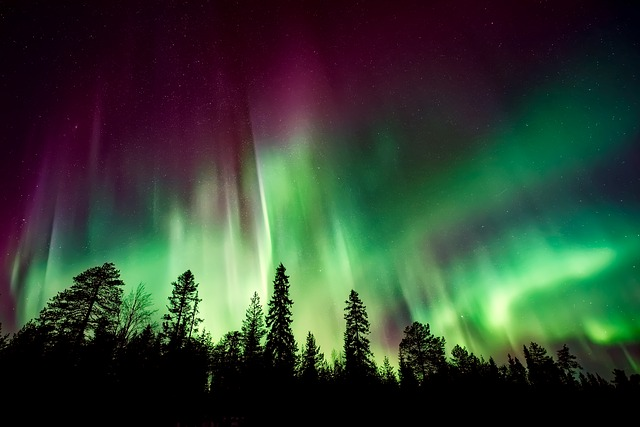
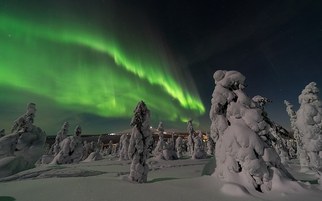

Imagens
 





A aurora boreal é um dos fenômenos naturais mais lindos e raros do mundo. A aurora boreal ocorre no polo norte da terra e atrai a atenção de centenas de turistas todos os anos, sendo visível principalmente na Noruega, Suécia, Dinamarca, Alasca, Finlândia, Escócia, Rússia, Islândia, Groenlândia e Canadá. Leia mais a respeito clicando aqui.



Tem alguma dúvida ou quer fazer algum comentário sobre as Auroras Boreais? Sem problemas, nos envie um e-mail preenchendo o formulário abaixo.